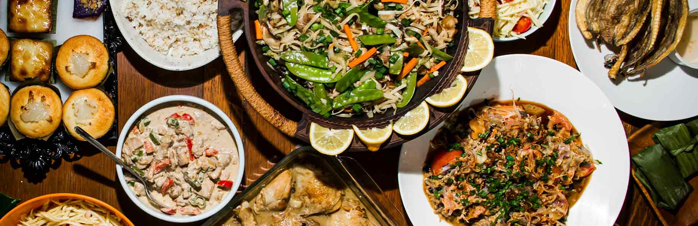
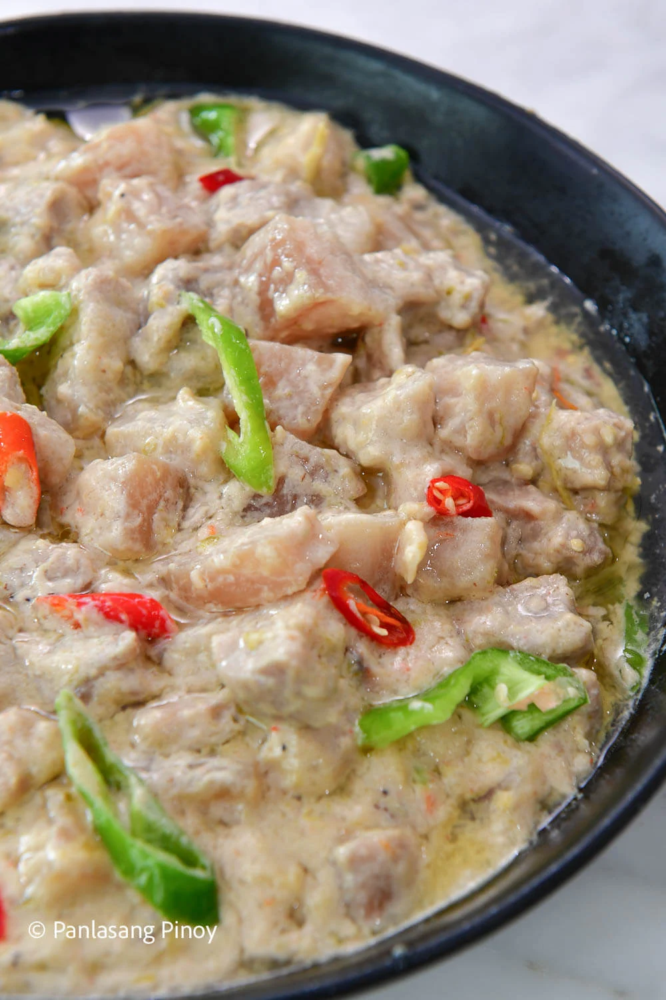

Filipino Cuisine
Log In
Log In

Ingredients
Find recipes organized by meats, vegetables, and spices.
Discover More
Meats
Vegetables
Spices
Rice & Noodles
Seafood
Fruits
Popular Recipes
Chicken Adobo
View Ingredients
Sinigang
View Ingredients

Bicol Express
View Ingredients
Chicken Adobo
Ingredients:
1 kg chicken (cut into pieces)
5 tablespoons soy sauce
3 tablespoons vinegar
5 cloves garlic (minced)
2 bay leaves
1 teaspoon whole peppercorns
1 cup water
Instructions:
Marinate the chicken in soy sauce and garlic.
Separate the chicken from the marinade.
Pan-fry the chicken.
Pour marinade into the pot and add water.
Simmer for 20 to 25 minutes.
Season and serve.
Close
Sinigang
Ingredients:
1 kg pork belly or ribs
1 pack tamarind soup base or fresh tamarind (about 100g)
2 medium tomatoes (quartered)
1 medium onion (quartered)
1 small radish (sliced)
Instructions:
In a large soup pot heat the vegetable oil over medium heat.
Stir in the onion. Cook, stirring frequently until the onion begins to be translucent (approx. 2-4 minutes).
Stir in tomatoes, pork and Season the onion with salt.
Pour in chicken broth and tamarind soup base. Mix to combine.
Simmer until pork tender and cooked through (approx. 30-40 minutes).
Stir in green beans, spinach, and sliced okra. Cook until tender and Serve.
Close
Bicol Express
Ingredients:
2 lbs. pork belly sliced into strips
2 cups coconut milk
1/4 cup shrimp paste or salted Krill
5 cloves garlic crushed and 1 piece onion chopped
5 pieces Thai chili pepper chopped
8 grams Maggi Magic Sarap
Instructions:
Combine coconut milk, onion, ginger, garlic, and pork in a cooking pot.
Stir. Turn the heat on and let the coconut milk boil.
Cover the pot and continue to boil in medium heat until the liquid reduces to half.
Stir the mixture every 7 minutes to prevent lumps from forming.
Add balaw or bagoong alamang, chili peppers, coconut cream, and Knorr pork cube.
Transfer to a serving bowl. Serve. Share and enjoy!
Close